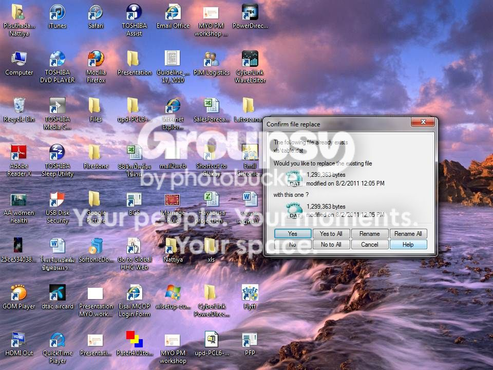

-----
บนหน้า Desktop ของน้อง มันยังขาดอีกหลาย Folder เลยครับ

แน่ใจแล้วเหรอว่าไฟล์เกมมันอยู่ตรงนั้น
---------------------------
ส่วนตอนแตกไฟล์ ใช้โปรแกรมนี้

ถ้ายังไม่มีโปรแกรม สามารถโหลดได้จากด้านล่างนี้
Winrar
Winzip

 โดย ผีชินจัง » พฤหัสฯ. 03 พ.ย. 2011 11:56 am
โดย ผีชินจัง » พฤหัสฯ. 03 พ.ย. 2011 11:56 am



 โดย A'quasia » พฤหัสฯ. 03 พ.ย. 2011 11:57 am
โดย A'quasia » พฤหัสฯ. 03 พ.ย. 2011 11:57 am


 โดย BunnyBurner » พฤหัสฯ. 03 พ.ย. 2011 12:08 pm
โดย BunnyBurner » พฤหัสฯ. 03 พ.ย. 2011 12:08 pm
 โดย Neko » พฤหัสฯ. 03 พ.ย. 2011 2:29 pm
โดย Neko » พฤหัสฯ. 03 พ.ย. 2011 2:29 pm


 โดย BunnyBurner » พฤหัสฯ. 03 พ.ย. 2011 2:54 pm
โดย BunnyBurner » พฤหัสฯ. 03 พ.ย. 2011 2:54 pm
 โดย aibat » พฤหัสฯ. 03 พ.ย. 2011 3:10 pm
โดย aibat » พฤหัสฯ. 03 พ.ย. 2011 3:10 pm
 โดย Narcizza » พฤหัสฯ. 03 พ.ย. 2011 3:56 pm
โดย Narcizza » พฤหัสฯ. 03 พ.ย. 2011 3:56 pm
Neko เขียน:เมื่อวาน เอา เอเล น้อย ลอง ยิง ชินนาม่อนมา
จริงๆแล้ว
ชินนาม่อน เป็น มอนสเตอร์ ไร้ธาตุ
แต่พอ ลองเอา blast ธาตุน้ำเลเวล 5 ยิง จะได้ ดาเมจ ประมาน 1900
blast ลม เลเวล 5 ยิง ได้ ดาเมจ ประมาน 1500 - 1600
เดี๋ยววันนี้ กลับบ้านแล้วจะไปยิง + ถ่ายรูปมาอีกทีจ้า

 โดย ผีชินจัง » พฤหัสฯ. 03 พ.ย. 2011 4:05 pm
โดย ผีชินจัง » พฤหัสฯ. 03 พ.ย. 2011 4:05 pm
Neko เขียน:เมื่อวาน เอา เอเล น้อย ลอง ยิง ชินนาม่อนมา
จริงๆแล้ว
ชินนาม่อน เป็น มอนสเตอร์ ไร้ธาตุ
แต่พอ ลองเอา blast ธาตุน้ำเลเวล 5 ยิง จะได้ ดาเมจ ประมาน 1900
blast ลม เลเวล 5 ยิง ได้ ดาเมจ ประมาน 1500 - 1600
เดี๋ยววันนี้ กลับบ้านแล้วจะไปยิง + ถ่ายรูปมาอีกทีจ้า
 โดย Neko » พฤหัสฯ. 03 พ.ย. 2011 9:23 pm
โดย Neko » พฤหัสฯ. 03 พ.ย. 2011 9:23 pm
 โดย hamtaro » พฤหัสฯ. 03 พ.ย. 2011 9:27 pm
โดย hamtaro » พฤหัสฯ. 03 พ.ย. 2011 9:27 pm
Neko เขียน:
.........
กำลังคิดว่า จริงๆแล้ว ชินนาม่อน มันไร้ธาตุมาตั้งแต่แรก หรือเปล่า ????
แต่ทำไม เซิฟไทย ถึงพากัน ใช้ ธาตุลม ยิง ชินนามอนกันนะ
.....................

 โดย Neko » พฤหัสฯ. 03 พ.ย. 2011 9:32 pm
โดย Neko » พฤหัสฯ. 03 พ.ย. 2011 9:32 pm

 โดย Narcizza » พฤหัสฯ. 03 พ.ย. 2011 9:34 pm
โดย Narcizza » พฤหัสฯ. 03 พ.ย. 2011 9:34 pm

 โดย aibat » ศุกร์ 04 พ.ย. 2011 12:46 am
โดย aibat » ศุกร์ 04 พ.ย. 2011 12:46 am

 โดย รอน » ศุกร์ 04 พ.ย. 2011 12:54 am
โดย รอน » ศุกร์ 04 พ.ย. 2011 12:54 am

 โดย Jinxy » ศุกร์ 04 พ.ย. 2011 1:04 pm
โดย Jinxy » ศุกร์ 04 พ.ย. 2011 1:04 pm


กำลังดูบอร์ดนี้: ไม่มีสมาชิก และ บุคคลทั่วไป 3 ท่าน